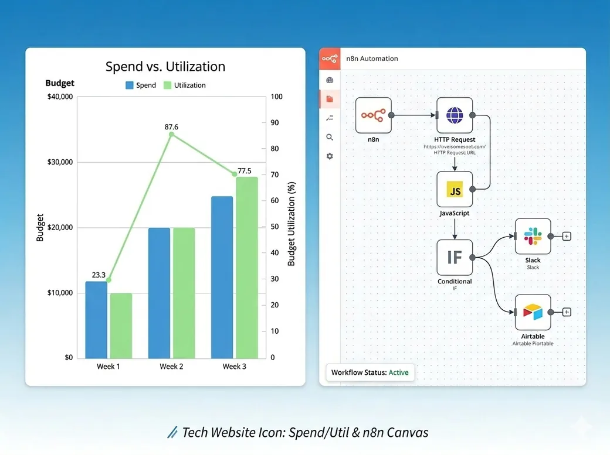

Financial Services · 1,500 users · Hybrid AD and cloud identity
Zero Touch JML Provisioning
The organization carried 600 admin accounts with unreviewed entitlements. Lifecycle ran by hand. New hire provisioning took 72 hours. Offboarding gaps left orphaned accounts active in production.
We built a SAML 2.0 Just in Time pipeline tied to HR joiner events, validated in a 600 user simulated forest, with automated leaver triggers.
- Provisioning cut from 72 hours to Zero Touch
- 55% fewer IT support tickets in 60 days
- 600 admin accounts audited and remediated
- Orphaned account risk eliminated
Financial Services · 300 users · On premises AD, SSO modernization
Zero Downtime Identity Migration
Legacy identity infrastructure no longer met audit or operational needs. A full migration was required. The risk of downtime on revenue systems had stalled the team. No validated cutover plan existed.
We replicated production in a 100 user sandbox, restructured the AGDLP model, tested the SSO cutover end to end, and built a runbook with a tested rollback for every step.
- Zero production downtime across all events
- Cutover runbook validated before production use
- AGDLP restructure completed with no role errors
- SSO cutover with no service interruption
Financial Services · 300 users · Hybrid AD, SOC2 audit requirement
PAM and MFA Hardening
MFA enforcement was inconsistent. Revenue generating roles had no guaranteed coverage. PAM controls were absent. The organization faced a SOC2 audit with documented gaps in access control.
We mapped every revenue role, applied least privilege and Just in Time access to privileged accounts, deployed Fine Grained Password Policies, and validated all of it in the lab first.
- 100% MFA compliance across revenue roles
- All privileged accounts under least privilege
- Fine Grained Password Policies across role tiers
- Access control findings resolved before the audit
Financial Services · 300 users · Multi SaaS, AD connected
SaaS Capital Recovery
The organization tracked SaaS licenses by hand. Offboarding did not trigger reclamation. Roughly 30% of the SaaS budget went to accounts with no active user. No audit process existed.
We ran a Lab First audit, cross referenced AD leaver events against SaaS entitlements, built n8n deprovisioning, and deployed license harvesting through Gearset.
- 30% of annual SaaS spend recovered
- 30 days from audit start to reclamation
- Automated deprovisioning on every future leaver
- License harvesting with no manual work

Rayburn Ideas · Our own practice site · SOC2 buyer trust signals
Digital Trust Rebuild
The practice site ran on Google Sites. A 404 and two dead nav items met every visitor. It named no buyer, showed no proof, and hid the pricing. Enterprise buyers saw no trust signals.
We ran the same method we run on identity. We audited every asset, named the buyer, and built five pages on a custom domain. We validated the full build before launch.
- Dead links cut from three to zero
- Four case studies published with hard numbers
- Every page under 110KB for fast load
- Run cost about $10 a year